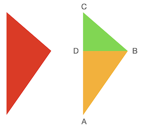

Chapter 3 三角形绘制
本章节算法和代码引用了Dmitry V. Sokolov的tinyrenderer第二章三角形光栅化过程(Sokolov 2022b)。在原算法的基础上，本章节做了整理、改进和重构。感谢Dmitry V. Sokolov将这一段算法整理成册，并开源地发布在GitHub供所有人使用。
在上一章节中，我们描述了基本的线段绘制的算法。线段是所有直线，射线，以及曲线的基本构成单元。对于一条曲线来说，我们可以通过利用微积分的思想，将曲线转换为一条一条细小的线段，通过控制线段的数量来控制曲线的平滑精度。而对于一个曲面来说，我们则可以通过渲染无数个细小的三角形来拟合。
我们在此章节中，将会探索在2D平面下的三角形渲染。在掌握了2D三角形渲染的方法以后，对于一个立体的3D图形，无非通过投影变换将三维空间转换为二维平面，然后重复这个渲染过程。
3.1 空心三角形渲染
我们已经利用Bresenham算法实现了DrawLine函数，对于空心三角形的绘制，无非是三角形三个端点使用DrawLine进行三次线段绘制。
#include "datatypes.hpp"
using namespace SoftwareRenderer;
void DrawTriangleFrame(Image& img, Vector2f p1, Vector2f p2, Vector2f p3, Color color)
{
DrawLine(img, p1, p2, color);
DrawLine(img, p2, p3, color);
DrawLine(img, p3, p1, color);
}
int main()
{
auto img = Image(200, 200);
DrawTriangleFrame(img, Vector2f(0.2f, 0.2f), Vector2f(0.6f, 0.6f), Vector2f(0.3f, 0.6f), Color::Red());
DrawTriangleFrame(img, Vector2f(0.2f, 0.5f), Vector2f(0.1f, 0.8f), Vector2f(0.2f, 0.9f), Color::Green());
img.SaveAsPNG("triangle-frame.png");
return 0;
}运行该程序我们就可以得到一个空心三角形。

3.2 扫描线算法
通过线段绘制的办法，我们已经得到了一个空心的三角形。而对于实心三角形来说，一个朴素的想法是，我们从下至上，如同填色一样，一条线一条线的补全颜色，直到绘制完成整个三角形。
由于我们不断的在三角形内部从左至右扫描并填，这个算法被称之为扫描线算法。现在让我们来讨论扫描线算法的实现细节。
第一步，我们将三角形切分为上下两部分。

如上图所示，红色的三角形被经过B点的水平线，分成了上下两部分。上部分三角形由线段AC，BC和水平线BD围成，下半部分三角形则由AC，AB和水平线BD围成。A，B，C三点的确定只需要根据三角形的三个端点的y坐标从低到高排序即可。
如果A和B处于同一水平线，y值相等，那么我们可以认为其下半部分ABD（或上半部分BDC）为空三角形，而只存在上半部分（或下半部分）三角形。
经过如此切分以后，三角形的三条线段的方程都是已知的。那么我们关注三角形ABD，我们下往上，在线段AD上寻找一个点，然后做水平线，与AB相交，这条线段即我们的扫描线。这根扫描线明显处于三角形内部，那么我们把其经过的所有像素着色即可。
我们用C++代码来表述这一过程：
#include "datatypes.hpp"
#include <iostream>
using namespace SoftwareRenderer;
// 已知线段的两个端点，当一个点在线段上，并已知其y值，求x值
int SolveLineX(Vector2i p1, Vector2i p2, int y)
{
// p1.y和p2.y应不相等，我们在扫描线循环中，规避了相等情况
assert(p1.y != p2.y);
auto t = (y - p1.y) / (float)(p2.y - p1.y);
return t * (p2.x - p1.x) + p1.x;
}
// 从左端点到右端点扫描并着色
void LineSweep(Image& img, int xMin, int xMax, int y, Color color)
{
if (xMin > xMax)
std::swap(xMin, xMax);
for (auto x = xMin; x <= xMax; x++) {
img.SetColor(x, y, color);
}
}
void DrawTriangle(Image& img, Vector2f p1, Vector2f p2, Vector2f p3, Color color)
{
// 将屏幕坐标转换到像素空间
auto p1i = Vector2i(p1.x * img.Width(), p1.y * img.Height());
auto p2i = Vector2i(p2.x * img.Width(), p2.y * img.Height());
auto p3i = Vector2i(p3.x * img.Width(), p3.y * img.Height());
// 将三角形三个坐标按y轴从低到高排序
if (p1i.y > p2i.y)
std::swap(p1i, p2i);
if (p1i.y > p3i.y)
std::swap(p1i, p3i);
if (p2i.y > p3i.y)
std::swap(p2i, p3i);
// 扫描下半部分三角形，如果三角形水平，p1i.y == p2i.y
// 则该循环被跳过
for (auto y = p1i.y; y < p2i.y; y++) {
auto xMin = SolveLineX(p1i, p3i, y);
auto xMax = SolveLineX(p1i, p2i, y);
LineSweep(img, xMin, xMax, y, color);
}
// 扫描上半部分三角形，如果三角形水平，p2i.y == p3i.y
// 则该循环被跳过
for (auto y = p2i.y; y < p3i.y; y++) {
auto xMin = SolveLineX(p1i, p3i, y);
auto xMax = SolveLineX(p2i, p3i, y);
LineSweep(img, xMin, xMax, y, color);
}
}
int main()
{
auto img = Image(200, 200);
DrawTriangle(img, Vector2f(0.2f, 0.2f), Vector2f(0.6f, 0.6f), Vector2f(0.3f, 0.6f), Color::Red());
DrawTriangle(img, Vector2f(0.2f, 0.5f), Vector2f(0.1f, 0.8f), Vector2f(0.2f, 0.9f), Color::Green());
img.SaveAsPNG("line-sweeping.png");
return 0;
}运行代码得到